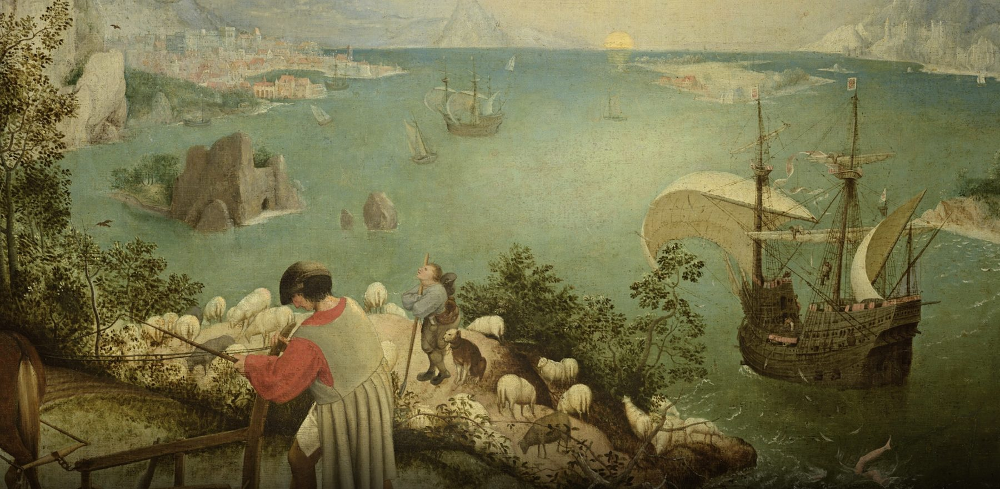
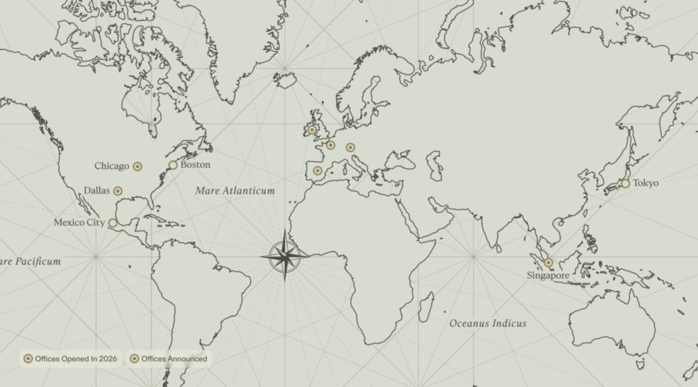
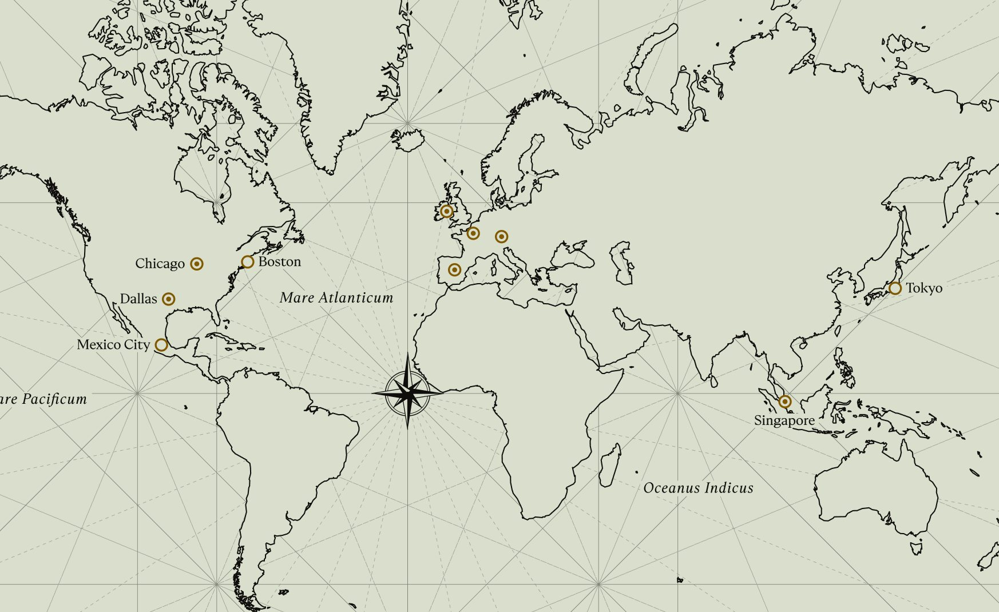
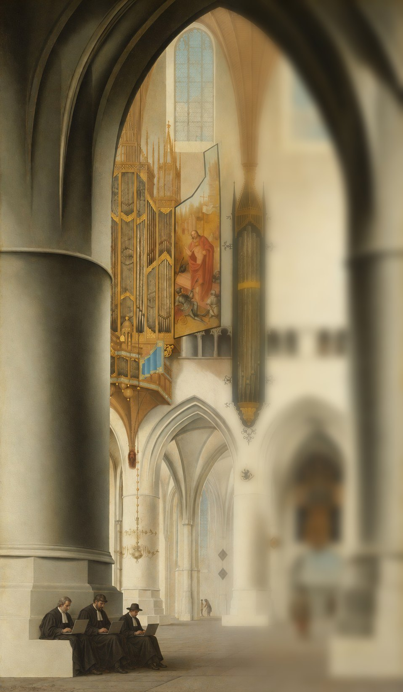

Year in Review
MMXXVI
A New Standard for Legal Work
2n 2026, Harvey expanded what legal AI could do and what legal teams could achieve as a result. For years, lawyers imagined what this technology could do for their work, and most of what they got was small.
2026 changed that. Agents, long-running work, and a connected platform made the imagined version real, for law firms and in-house teams alike.
2026 At A Glance
The Year Legal Work
Went Agentic
From customer adoption to product innovation and global expansion, 2026 marked a defining year for Harvey, raising the bar for what legal AI can achieve.
4
Harvey more than tripled its customer base in 2026.
Over 3,500 organizations now run on Harvey.
80% of the Am Law 100, and five of the Fortune 10.
Plus more than 1,600 in-house legal teams.

200,000+ professionals, across 85+ countries.
Law firms, in-house teams, and the mid-market, on every continent Harvey serves.
Harvey II
Introduced a more connected platform built around legal matters, with Spaces, Memory, and AI agents that can carry work forward.
Shipped in
2026
Choose a launch on the line
12Harvey II
Spaces, Memory, and AI agents around the legal matter
01 / 09

Hover to move around the offices
14New Offices Across Three Continents
Harvey opened offices in Chicago, Dallas, Dublin, Madrid, Munich, Paris, and Singapore, extending its presence across North America, Europe, and Asia. Additional offices were announced in Boston, Mexico City, and Tokyo.
Our research connects expert-defined legal standards with new approaches to evaluating, training, and improving models and agents.
16
Year in Review
MMXXVI
This design is a work in progress. More chapters are on the way.